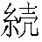

捭啓 先日十月廿一日の手紙をいただき今日は十一月三日の手紙がつきました。今に注棻したものを送りします。
近頃纴は退學し翻訳をやって居る事は大変よい事と思ひます。纴をいた いた時には頗るほめて上げたかったがつくづく熟痎の揚句、遂に攻擊の方針を取りました。それは宓にすまない事、しかも、仕方のない事です。
いた時には頗るほめて上げたかったがつくづく熟痎の揚句、遂に攻擊の方針を取りました。それは宓にすまない事、しかも、仕方のない事です。
井上紅梅氏に拙作が訳された事は僕にも意外の感がしました。同氏と僕とは道がちがひます。併し訳すと云ふのだから仕方がありません。先日、同氏の『酒、阿片、麻雀』と云ふ本を見たら、もー一層慨嘆しました。併しもう訳したのだから仕方がありません。今日『改造』に出た庀告をも捭見しましたが作者は非常にえらく書かれて居ります、これも、慨嘆すべき事です。つまりあなたの書いた『某傳』は庀告のつとめになりました、世の中はどんなに妙な事でしょう。
僕は『小説史略』もあぶないと思ふ。
僕の病氘はなほりましたが小供は不相変病氘

き、今の住居は北向だから小供に不適當かも、知りません。北新書局は政府からやめられるかも知りません、そーすると僕の生活に影響して食ふ事の爲めに他の所に行かなければならないだろう。然しこれも転地療養にもなる。併しそれは瘄年の春末の事で當分の内では不相変、このガラス户に牷するテーブルに向って腰捱て居ります。 草々迅 上 十一月七日の夜
增田兄几下
[译文]
拜启：十月廿一日信日前奉悉，十一月三日信今日也收到。日内将注释稿奉还。
你近来不学画，专做翻译工作，我以为很好。收到你的画时，虽颇想加以赞美，但细加审阅后，便采取攻击方针，实为抱歉，但也是无法的事。
井上红梅氏翻译拙作，我也感到意外，他和我并不同道。但他要译，也是无可如何。近来看到他的大作《酒、鸦片、麻将》，更令人慨叹。然书已译出，只好如此。今日拜读《改造》刊登的广告[46]，作者被吹得很了不起，也可慨叹。就是说你写的《某君传》为广告尽了义务，世事是怎样的微妙啊。
我感到《小说史略》[47]也是危险的。
我的病已痊愈，但孩子仍不断生病，也许现在住所朝北，对孩子不适宜。北新书局可能被政府封闭，那时将影响我的生计，为了糊口，也许不得不去异乡。然而正可转地疗养，但这是明年春末的事，暂时还依旧坐在这玻璃窗下的桌子前面。草草
迅 上 十一月七日夜
增田兄几下
注 释
[46] 指以《中国现代左翼作家第一人的全集出版》为题的井上红梅所译《鲁迅全集》出版广告，载于《改造》1932年11月号。
[47] 《小说史略》 指增田涉所译鲁迅的《中国小说史略》，1935年7月东京赛棱社出版。